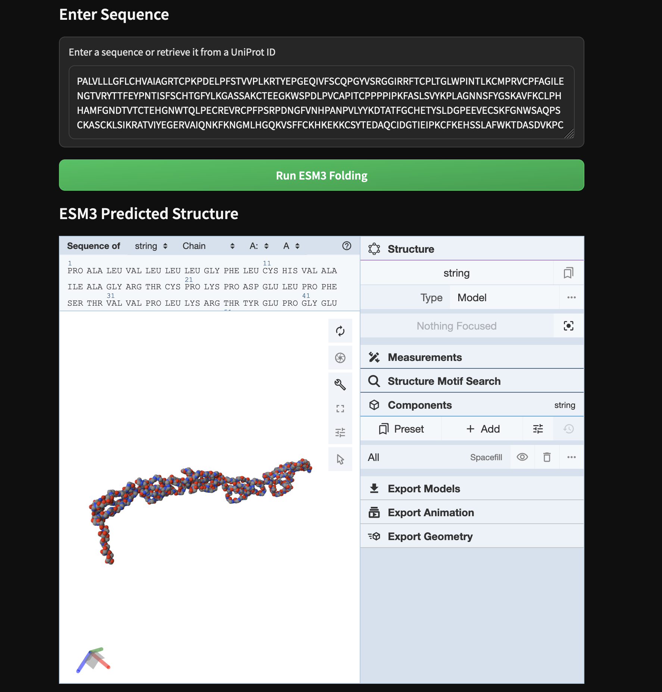

Build a protein folding dashboard with ESM3, Molstar, and Gradio

There are perhaps a quadrillion distinct proteins on the planet Earth, each one a marvel of nanotechnology discovered by painstaking evolution. We know the amino acid sequence of nearly a billion but we only know the three-dimensional structure of a few hundred thousand, gathered by slow, difficult observational methods like X-ray crystallography. Built upon this data are machine learning models like EvolutionaryScale’s ESM3 that can predict the structure of any sequence in seconds.
In this example, we’ll show how you can use Modal to not just run the latest protein-folding model but also build tools around it for you and your team of scientists to understand and analyze the results.
Basic Setup
import base64
import io
from pathlib import Path
from typing import Optional
import modal
MINUTES = 60 # seconds
app = modal.App("example-esm3")Create a Volume to store ESM3 model weights and Entrez sequence data
To minimize cold start times, we’ll store the ESM3 model weights on a Modal Volume. For patterns and best practices for storing model weights on Modal, see this guide. We’ll use this same distributed storage primitive to store sequence data.
volume = modal.Volume.from_name("example-esm3", create_if_missing=True)
VOLUME_PATH = Path("/vol")
MODELS_PATH = VOLUME_PATH / "models"
DATA_PATH = VOLUME_PATH / "data"Define dependencies in container images
The container image for structure inference is based on Modal’s default slim Debian
Linux image with esm for loading and running the model, gemmi for
managing protein structure file conversions, and setting an environment variable
for faster downloading of the model weights from Hugging Face.
esm3_image = (
modal.Image.debian_slim(python_version="3.11")
.uv_pip_install(
"esm==3.1.1",
"torch==2.4.1",
"gemmi==0.7.0",
"huggingface-hub==0.36.0",
)
.env({"HF_XET_HIGH_PERFORMANCE": "1", "HF_HOME": str(MODELS_PATH)})
)We’ll also define a separate image, with different dependencies,
for the part of our app that hosts the dashboard.
This helps reduce the complexity of Python dependency management
by “walling off” the different parts, e.g. separating
functions that depend on finicky ML packages
from those that depend on pedantic web packages.
Dependencies include gradio for building a web UI in Python and biotite for extracting sequences from UniProt accession numbers.
You can read more about how to configure container images on Modal in this guide.
web_app_image = (
modal.Image.debian_slim(python_version="3.11")
.uv_pip_install("gradio~=4.44.0", "biotite==0.41.2", "fastapi[standard]==0.115.4")
.add_local_dir(Path(__file__).parent / "frontend", remote_path="/assets")
)Here we “pre-import” libraries that will be used by the functions we run
on Modal in a given image using the with image.imports context manager.
with esm3_image.imports():
import tempfile
import gemmi
import torch
from esm.models.esm3 import ESM3
from esm.sdk.api import ESMProtein, GenerationConfig
with web_app_image.imports():
import biotite.database.entrez as entrez
import biotite.sequence.io.fasta as fasta
from fastapi import FastAPIDefine a Model inference class for ESM3
Next, we map the model’s setup and inference code onto Modal.
- For setup code that only needs to run once, we put it in a method
decorated with
@enter, which runs on container start. For details, see this guide. - The rest of the inference code goes in a method decorated with
@method. - We accelerate the compute-intensive inference with a GPU, specifically an A10G. For more on using GPUs on Modal, see this guide.
@app.cls(
image=esm3_image,
volumes={VOLUME_PATH: volume},
secrets=[modal.Secret.from_name("huggingface-secret")],
gpu="A10G",
timeout=20 * MINUTES,
)
class Model:
@modal.enter()
def enter(self):
self.model = ESM3.from_pretrained("esm3_sm_open_v1")
self.model.to("cuda")
print("using half precision and tensor cores for fast ESM3 inference")
self.model = self.model.half()
torch.backends.cuda.matmul.allow_tf32 = True
self.max_steps = 250
print(f"setting max ESM steps to: {self.max_steps}")
def convert_protein_to_MMCIF(self, esm_protein, output_path):
structure = gemmi.read_pdb_string(esm_protein.to_pdb_string())
doc = structure.make_mmcif_document()
doc.write_file(str(output_path), gemmi.cif.WriteOptions())
def get_generation_config(self, num_steps):
return GenerationConfig(track="structure", num_steps=num_steps)
@modal.method()
def inference(self, sequence: str):
num_steps = min(len(sequence), self.max_steps)
print(f"running ESM3 inference with num_steps={num_steps}")
esm_protein = self.model.generate(
ESMProtein(sequence=sequence), self.get_generation_config(num_steps)
)
print("checking for errors in output")
if hasattr(esm_protein, "error_msg"):
raise ValueError(esm_protein.error_msg)
print("converting ESMProtein into MMCIF file")
save_path = Path(tempfile.mktemp() + ".mmcif")
self.convert_protein_to_MMCIF(esm_protein, save_path)
print("returning MMCIF bytes")
return io.BytesIO(save_path.read_bytes())Serve a dashboard as an asgi_app
In this section we’ll create a web interface around the ESM3 model that can help scientists and stakeholders understand and interrogate the results of the model.
You can deploy this UI, along with the backing inference endpoint, with the following command:
modal deploy esm3.pyIntegrating Modal Functions
The integration between our dashboard and our inference backend
is made simple by the Modal SDK:
because the definition of the Model class is available in the same Python
context as the defintion of the web UI,
we can instantiate an instance and call its methods with .remote.
The inference runs in a GPU-accelerated container with all of ESM3’s dependencies, while this code executes in a CPU-only container with only our web dependencies.
def run_esm(sequence: str) -> str:
sequence = sequence.strip()
print("running ESM")
mmcif_buffer = Model().inference.remote(sequence)
print("converting mmCIF bytes to base64 for compatibility with HTML")
mmcif_content = mmcif_buffer.read().decode()
mmcif_base64 = base64.b64encode(mmcif_content.encode()).decode()
return get_molstar_html(mmcif_base64)Building a UI in Python with Gradio
We’ll visualize the results using Mol*. Mol* (pronounced “molstar”) is an open-source toolkit for visualizing and analyzing large-scale molecular data, including secondary structures and residue-specific positions of proteins.
Second, we’ll create links to lookup the metadata and structure of known proteins using the Universal Protein Resource database from the UniProt consortium which is supported by the European Bioinformatics Institute, the National Human Genome Research Institute, and the Swiss Institute of Bioinformatics. UniProt is also a hub that links to many other databases, like the RCSB Protein Data Bank.
To pull sequence data, we’ll use the Biotite library to pull FASTA files from UniProt which contain labelled sequences.
You should see the URL for this UI in the output of modal deploy or on your Modal app dashboard for this app.
@app.function(
image=web_app_image,
volumes={VOLUME_PATH: volume},
max_containers=1, # Gradio requires sticky sessions
)
@modal.concurrent(max_inputs=100) # Gradio can handle many async inputs
@modal.asgi_app()
def ui():
import gradio as gr
from fastapi.responses import FileResponse
from gradio.routes import mount_gradio_app
web_app = FastAPI()
# custom styles: an icon, a background, and some CSS
@web_app.get("/favicon.ico", include_in_schema=False)
async def favicon():
return FileResponse("/assets/favicon.svg")
@web_app.get("/assets/background.svg", include_in_schema=False)
async def background():
return FileResponse("/assets/background.svg")
css = Path("/assets/index.css").read_text()
theme = gr.themes.Default(
primary_hue="green", secondary_hue="emerald", neutral_hue="neutral"
)
title = "Predict & Visualize Protein Structures"
with gr.Blocks(theme=theme, css=css, title=title, js=always_dark()) as interface:
gr.Markdown(f"# {title}")
with gr.Row():
with gr.Column():
gr.Markdown("## Enter UniProt ID ")
uniprot_num_box = gr.Textbox(
label="Enter UniProt ID or select one on the right",
placeholder="e.g. P02768, P69905, etc.",
)
get_sequence_button = gr.Button(
"Retrieve Sequence from UniProt ID", variant="primary"
)
uniprot_link_button = gr.Button(value="View protein on UniProt website")
uniprot_link_button.click(
fn=None,
inputs=uniprot_num_box,
js=get_js_for_uniprot_link(),
)
with gr.Column():
example_uniprots = get_uniprot_examples()
def extract_uniprot_num(example_idx):
uniprot = example_uniprots[example_idx]
return uniprot[uniprot.index("[") + 1 : uniprot.index("]")]
gr.Markdown("## Example UniProt Accession Numbers")
with gr.Row():
half_len = int(len(example_uniprots) / 2)
with gr.Column():
for i, uniprot in enumerate(example_uniprots[:half_len]):
btn = gr.Button(uniprot, variant="secondary")
btn.click(
fn=lambda j=i: extract_uniprot_num(j),
outputs=uniprot_num_box,
)
with gr.Column():
for i, uniprot in enumerate(example_uniprots[half_len:]):
btn = gr.Button(uniprot, variant="secondary")
btn.click(
fn=lambda j=i + half_len: extract_uniprot_num(j),
outputs=uniprot_num_box,
)
gr.Markdown("## Enter Sequence")
sequence_box = gr.Textbox(
label="Enter a sequence or retrieve it from a UniProt ID",
placeholder="e.g. MVTRLE..., PVTTIMHALL..., etc.",
)
get_sequence_button.click(
fn=get_sequence, inputs=[uniprot_num_box], outputs=[sequence_box]
)
run_esm_button = gr.Button("Run ESM3 Folding", variant="primary")
gr.Markdown("## ESM3 Predicted Structure")
molstar_html = gr.HTML()
run_esm_button.click(fn=run_esm, inputs=sequence_box, outputs=molstar_html)
# return a FastAPI app for Modal to serve
return mount_gradio_app(app=web_app, blocks=interface, path="/")Folding from the command line
If you want to quickly run the ESM3 model without the web interface, you can run it from the command line like this:
modal run esm3This will run the same inference code above on Modal. The results are returned in the Crystallographic Information File format, which you can render with the online Molstar Viewer.
@app.local_entrypoint()
def main(sequence: Optional[str] = None, output_dir: Optional[str] = None):
if sequence is None:
print("using sequence for insulin [P01308]")
sequence = "MRTPMLLALLALATLCLAGRADAKPGDAESGKGAAFVSKQEGSEVVKRLRRYLDHWLGAPAPYPDPLEPKREVCELNPDCDELADHIGFQEAYRRFYGPV"
if output_dir is None:
output_dir = Path("/tmp/esm3")
output_dir.mkdir(parents=True, exist_ok=True)
output_path = output_dir / "output.mmcif"
print("starting inference on Modal")
results_buffer = Model().inference.remote(sequence)
print(f"writing results to {output_path}")
output_path.write_bytes(results_buffer.read())Addenda
The remainder of this code is boilerplate.
Extracting Sequences from UniProt Accession Numbers
To retrieve sequence information we’ll utilize the biotite library which
will allow us to fetch fasta sequence files from the National Center for Biotechnology Information (NCBI) Entrez database.
def get_sequence(uniprot_num: str) -> str:
try:
DATA_PATH.mkdir(parents=True, exist_ok=True)
uniprot_num = uniprot_num.strip()
fasta_path = DATA_PATH / f"{uniprot_num}.fasta"
print(f"Fetching {fasta_path} from the entrez database")
entrez.fetch_single_file(
uniprot_num, fasta_path, db_name="protein", ret_type="fasta"
)
fasta_file = fasta.FastaFile.read(fasta_path)
protein_sequence = fasta.get_sequence(fasta_file)
return str(protein_sequence)
except Exception as e:
return f"Error: {e}"Supporting functions for the Gradio app
The following Python code is used to enhance the Gradio app, mostly by generating some extra HTML & JS and handling styling.
def get_js_for_uniprot_link():
url = "https://www.uniprot.org/uniprotkb/"
end = "/entry#structure"
return f"""(uni_id) => {{ if (!uni_id) return; window.open("{url}" + uni_id + "{end}"); }}"""
def get_molstar_html(mmcif_base64):
return f"""
<iframe
id="molstar_frame"
style="width: 100%; height: 600px; border: none;"
srcdoc='
<!DOCTYPE html>
<html>
<head>
<script src="https://cdn.jsdelivr.net/npm/@rcsb/rcsb-molstar/build/dist/viewer/rcsb-molstar.js"></script>
<link rel="stylesheet" href="https://cdn.jsdelivr.net/npm/@rcsb/rcsb-molstar/build/dist/viewer/rcsb-molstar.css">
</head>
<body>
<div id="protein-viewer" style="width: 1200px; height: 400px; position: center"></div>
<script>
console.log("Initializing viewer...");
(async function() {{
// Create plugin instance
const viewer = new rcsbMolstar.Viewer("protein-viewer");
// CIF data in base64
const mmcifData = "{mmcif_base64}";
// Convert base64 to blob
const blob = new Blob(
[atob(mmcifData)],
{{ type: "text/plain" }}
);
// Create object URL
const url = URL.createObjectURL(blob);
try {{
// Load structure
await viewer.loadStructureFromUrl(url, "mmcif");
}} catch (error) {{
console.error("Error loading structure:", error);
}}
}})();
</script>
</body>
</html>
'>
</iframe>"""
def get_uniprot_examples():
return [
"Albumin [P02768]",
"Insulin [P01308]",
"Hemoglobin [P69905]",
"Lysozyme [P61626]",
"BRCA1 [P38398]",
"Immunoglobulin [P01857]",
"Actin [P60709]",
"Ribonuclease [P07998]",
]
def always_dark():
return """
function refresh() {
const url = new URL(window.location);
if (url.searchParams.get('__theme') !== 'dark') {
url.searchParams.set('__theme', 'dark');
window.location.href = url.href;
}
}
"""